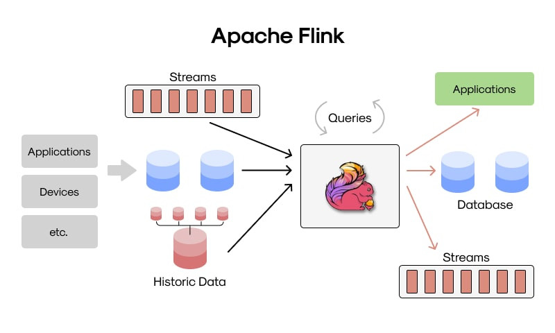
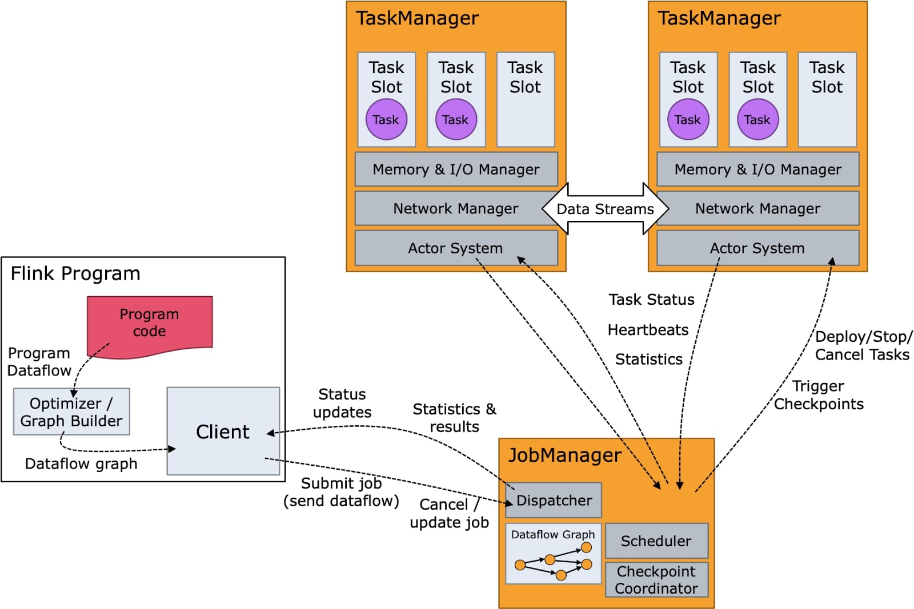
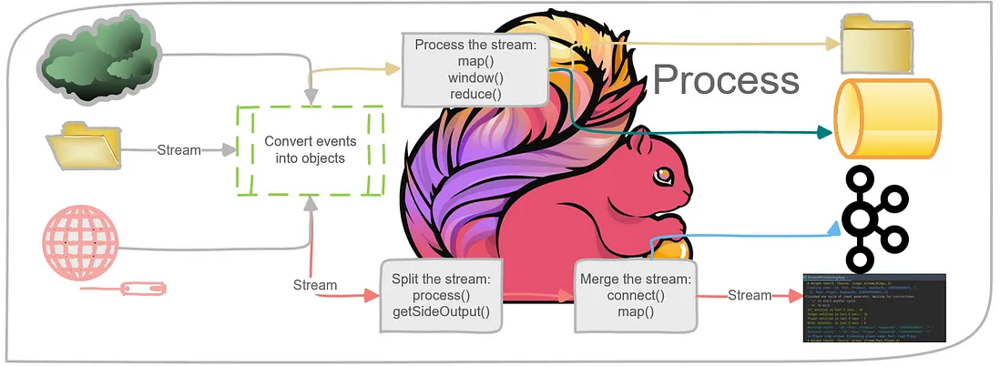
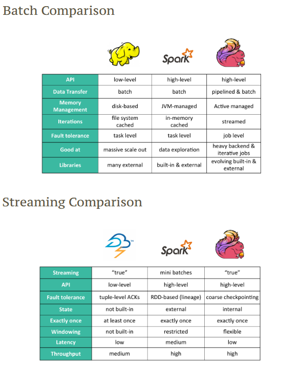
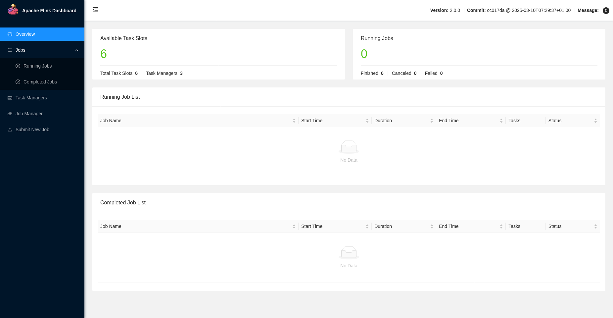
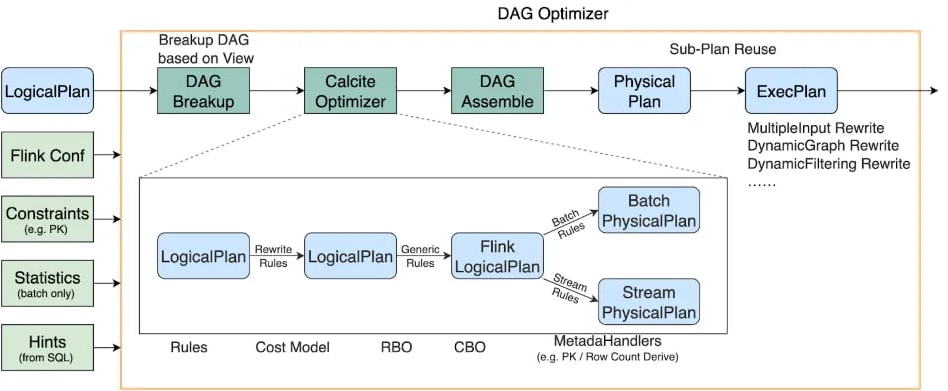
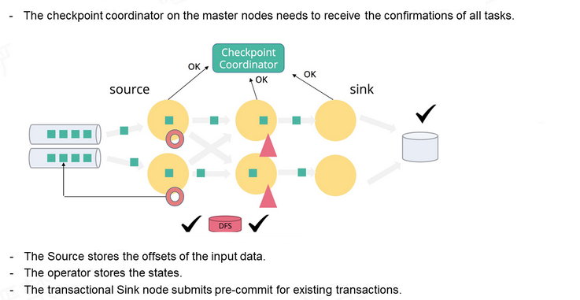
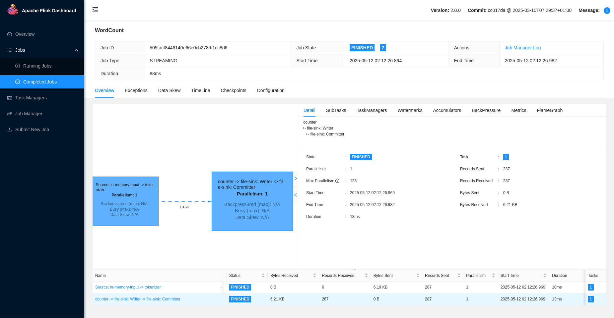

Apache Flink
Apache Flink es un sistema de procesamiento de datos distribuido y una plataforma de análisis de flujos en tiempo real. Está diseñado para ejecutar aplicaciones de procesamiento de eventos con baja latencia, alto rendimiento y una fuerte capacidad de recuperación ante fallos. Nacido en el ecosistema de proyectos de código abierto de la Apache Software Foundation, Flink ha ganado protagonismo como una alternativa avanzada a otros motores de procesamiento, particularmente por su enfoque nativo al streaming de datos.
A diferencia de motores como Hadoop o Spark que nacieron bajo paradigmas batch y luego evolucionaron al streaming, Flink fue construido desde cero para el procesamiento continuo, lo cual lo convierte en una herramienta clave para aplicaciones donde los datos nunca se detienen, como análisis de logs en tiempo real, detección de fraudes financieros, sistemas de monitoreo o análisis de redes sociales.
- ∘ Procesamiento de eventos en tiempo real (true streaming).
- ∘ Baja latencia y alto rendimiento.
- ∘ Tolerancia a fallos avanzada.
- ∘ Soporte para estado (stateful processing).
- ∘ Integración con múltiples fuentes de datos (Kafka, HDFS, JDBC, etc.).

Componentes principales
La arquitectura de Flink está compuesta por varios componentes que trabajan en conjunto para orquestar el procesamiento de datos en un clúster distribuido. Estos son los pilares que permiten a Flink manejar trabajos complejos con eficiencia:
- ➰ JobManager: Es el componente maestro. Su responsabilidad es coordinar la ejecución de los trabajos, distribuir las tareas a los nodos trabajadores (TaskManagers), y manejar el estado del trabajo, los checkpoints y las recuperaciones en caso de fallos. Se puede configurar en modo de alta disponibilidad (HA).
- ➰ TaskManager: Es el componente que ejecuta las tareas individuales. Cada TaskManager gestiona un número configurable de slots, donde cada slot representa la capacidad para ejecutar una sub-tarea de manera paralela. Estos nodos también se comunican entre sí para intercambiar datos intermedios.
- ➰ Dispatcher y ResourceManager: En una arquitectura moderna de Flink (desde la integración con Kubernetes o Yarn), el Dispatcher recibe las peticiones de los trabajos, mientras que el ResourceManager interactúa con el gestor de recursos del clúster para aprovisionar nodos según necesidad.
- ➰ State Backend: Es el componente que define cómo y dónde se guarda el estado del trabajo. Puede usarse memoria, sistemas de archivos distribuidos como HDFS o bases de datos especializadas como RocksDB para manejar estados grandes.
- ➰ Checkpointing System: Este sistema realiza instantáneas del estado del trabajo en intervalos definidos, permitiendo que, en caso de fallos, la ejecución pueda continuar desde el último checkpoint sin pérdida de datos ni inconsistencia.
- ➰ APIs de Flink: Flink proporciona múltiples APIs como la DataStream API (para flujos no estructurados), la Table API (similar a SQL para flujos y lotes) y la SQL API, que facilita el acceso a analistas y usuarios no técnicos.

¿Cómo funciona Apache Flink?
El funcionamiento de Apache Flink gira alrededor de un modelo de procesamiento de eventos individuales, lo que lo convierte en un verdadero motor de streaming. Cuando un trabajo es lanzado, Flink construye un grafo dirigido acíclico (DAG) de operaciones, conocido como Job Graph. Este grafo es transformado en un Execution Graph, donde cada nodo representa una operación lógica del pipeline.
Una vez desplegado, Flink empieza a recibir eventos en tiempo real desde las fuentes configuradas (como Kafka, Kinesis, sockets, archivos, etc.). Cada evento es procesado tan pronto como llega, a diferencia del modelo por lotes o micro-lotes. Esta es una de sus mayores fortalezas, ya que permite tiempos de respuesta muy reducidos. El sistema puede mantener estado asociado a cada clave del flujo de datos (por ejemplo, el saldo de una cuenta bancaria, un contador, un mapa de sesiones activas, etc.), lo que permite construir aplicaciones que requieren memoria de eventos anteriores.
El estado en Flink puede ser almacenado en memoria para operaciones rápidas, o en backends externos como RocksDB para operaciones de mayor volumen. Este estado es tolerante a fallos gracias al mecanismo de checkpointing distribuido. Cuando ocurre una interrupción o fallo, Flink reinicia las tareas desde el último checkpoint sin volver a procesar los eventos ya entregados, garantizando exactly-once semantics en la mayoría de los casos.
Una de las capacidades más avanzadas de Flink es el procesamiento basado en event-time, lo que permite procesar los datos en función del momento en que ocurrieron, y no en el orden de llegada. Esto es clave cuando trabajamos con sistemas distribuidos donde los eventos pueden llegar fuera de orden o con latencia. Flink usa watermarks para indicar qué tan adelante está el sistema en cuanto a la línea de tiempo de eventos, lo cual le permite agrupar correctamente los datos en ventanas de tiempo y emitir resultados consistentes, incluso cuando algunos datos llegan tarde.
Además, Flink puede usar operadores de transformación complejos, como uniones de flujos, filtros condicionales, funciones de agregación personalizadas, o ventanas deslizantes y acumulativas, todo sin necesidad de almacenar temporalmente el dataset completo.

Flink vs Spark
Apache Spark es un motor poderoso, pero su enfoque hacia el procesamiento de flujos es diferente. Spark Structured Streaming funciona bajo el modelo de micro-batch, donde agrupa los eventos que llegan en un intervalo de tiempo (por ejemplo, cada segundo) y los procesa como un lote pequeño. Esto permite aprovechar optimizaciones existentes del procesamiento batch, pero añade una latencia inherente entre la llegada de datos y la obtención del resultado.
Flink, en cambio, sigue el paradigma de streaming verdadero (real-time streaming). Cada evento se procesa de inmediato en cuanto llega. No hay necesidad de esperar a agrupar los eventos. Esto se traduce en menor latencia, procesamiento más fino y mayor capacidad de reaccionar a los datos en tiempo real. Además, Flink soporta una semántica de procesamiento más precisa sobre event-time, mientras que Spark ha tenido históricamente más limitaciones en ese aspecto, aunque ha mejorado con el tiempo.
También se diferencia en cómo ambos manejan el estado: Flink puede trabajar con estados grandes y complejos distribuidos en todo el clúster, sin necesidad de persistir resultados externos intermedios. Esto hace que Flink sea más eficiente en casos donde se necesita mantener memoria entre eventos, como en detección de patrones o enriquecimiento de datos.
Supón que tienes una aplicación de detección de fraudes que observa millones de transacciones bancarias por segundo. Para detectar comportamientos sospechosos, necesitas:
- ∘ Guardar el historial de transacciones de cada usuario (últimos montos, países, dispositivos).
- ∘ Detectar si hubo varias transacciones en diferentes países en menos de 5 minutos.
- ∘ Ver si hay patrones repetitivos (como usar una tarjeta justo antes de que se bloquee).
Para hacer esto en Flink, cada usuario tiene asociado un estado (por ejemplo, una lista de transacciones recientes, el último país donde usó la tarjeta, etc.). Este estado es guardado internamente por Flink y distribuido en memoria (o en disco local si es muy grande) a lo largo de todo el clúster. Cuando llegan nuevas transacciones, Flink accede al estado del usuario, decide si hay fraude y lo actualiza.
Ese “estado” puede ser grande y complejo: miles de claves (usuarios), cada una con su propio historial, contadores, mapas, listas, temporizadores, etc. Flink permite manejar todo esto de forma eficiente sin necesidad de consultar una base de datos externa cada vez que llega un evento.

DAG: Directed Acyclic Graph (Grafo Acíclico Dirigido)
En el contexto de la ciencia de datos, un DAG es una representación visual y matemática de un flujo de trabajo o un proceso que consta de una serie de tareas (nodos) conectadas por dependencias direccionales (aristas). La característica crucial de un DAG es que no contiene ciclos, lo que significa que no puedes comenzar en un nodo y volver al mismo nodo siguiendo las direcciones de las aristas.
La importancia de usar DAG's en ciencia de datos se debe a:
- ׄ🕵🏻♀️ Orquestación de flujos de trabajo: Los DAGs son fundamentales en herramientas de orquestación de flujos de trabajo como Apache Airflow, Prefect, y dbt (data build tool). Permiten definir y gestionar pipelines de datos complejos, especificando el orden en que deben ejecutarse las tareas y las dependencias entre ellas.
- ׄ🕵🏻♀️ Representación de pipelines de datos: Un DAG puede visualizar claramente el linaje de los datos, mostrando cómo se transforman los datos desde su origen hasta su destino final. Esto facilita la comprensión, el mantenimiento y la depuración de los pipelines.
- ׄ🕵🏻♀️ Paralelización y concurrencia: Al definir las dependencias, los sistemas de orquestación basados en DAGs pueden ejecutar en paralelo las tareas que no dependen unas de otras, optimizando el tiempo de procesamiento.
- ׄ🕵🏻♀️ Manejo de errores y reintentos: Los DAGs permiten definir estrategias específicas para el manejo de errores en cada tarea. Si una tarea falla, el sistema puede reintentarla o notificar a los responsables, sin afectar necesariamente a otras partes del flujo de trabajo.
- ׄ🕵🏻♀️ Reproducibilidad: Al definir el flujo de trabajo de manera explícita en un DAG, se facilita la reproducción de los análisis y los procesos de transformación de datos.
- ׄ🕵🏻♀️ Modelado de dependencias: En diversas áreas de la ciencia de datos, como el modelado causal (con redes bayesianas) o la compilación de código, los DAGs se utilizan para representar las relaciones de dependencia entre variables o componentes.
En ciencia de datos, un DAG (Grafo Acíclico Dirigido) se utiliza para representar visualmente flujos de trabajo complejos, como en pipelines ETL/ELT donde muestra las dependencias entre las transformaciones de datos, en el entrenamiento de modelos de Machine Learning para definir los pasos desde el preprocesamiento hasta el despliegue, en el análisis de datos para orquestar scripts, y en herramientas como dbt para representar las dependencias entre los diferentes modelos de datos (SQL) en un proyecto de transformación.

Optimización
Apache Flink cuenta con un optimizador de consultas muy avanzado, diseñado especialmente para el procesamiento de datos en flujo (streaming) y también por lotes (batch). Este optimizador analiza el plan lógico que define el usuario (es decir, las transformaciones como filtros, joins, agrupaciones, ventanas, etc.) y lo convierte en un plan físico más eficiente antes de que se ejecute en el clúster.
Su método de optimización se basa en:
- ׄ🐿️ Reordenamiento de operadores: El optimizador puede cambiar el orden de las operaciones para minimizar el volumen de datos que se mueven por la red. Por ejemplo, si se puede aplicar un filtro antes de un join costoso, lo hace automáticamente.
- 🐿️ Uso de estadísticas: Cuando están disponibles, Flink utiliza estadísticas de los datos (como el número de filas, distribución de claves, tamaños) para tomar decisiones sobre el mejor plan de ejecución.
- 🐿️ Optimización de joins: Uno de los puntos más complejos en sistemas distribuidos. Flink decide si conviene hacer un broadcast join (enviar una tabla pequeña a todos los nodos), un hash join, o incluso un stateful join en streaming con ventanas temporales. Esta decisión es crítica para el rendimiento.
- 🐿️ Pipelines de ejecución eficientes: Flink convierte las operaciones en tareas altamente optimizadas, muchas de las cuales pueden operar sincrónicamente dentro del mismo proceso si detecta que no hace falta pasar datos entre nodos.
Este proceso de optimización es automático y permite a Flink ejecutar trabajos de forma muy eficiente, especialmente en flujos donde cada milisegundo importa.

Tolerancia a fallos
La tolerancia a fallos en Apache Flink se basa en un mecanismo robusto y eficiente de checkpoints automáticos y savepoints manuales. Estos puntos de control permiten recuperar el estado completo del sistema ante cualquier fallo (ya sea una caída de nodo, error de red o reinicio inesperado) sin perder datos ni procesar eventos duplicados.
Piensa en los checkpoints como fotos sincronizadas de todos los componentes que procesan los datos. Si ocurre un error, Flink puede volver a esa foto y continuar desde ahí. Los savepoints, por su parte, son capturas manuales que tú decides cuándo tomar, útiles por ejemplo para actualizaciones de código.
El mecanismo subyacente funciona así:
- 🐿️ Checkpoint Coordinator: Es el nodo maestro que inicia el proceso de checkpoint. Envía una señal a todas las tareas del job (source, operadores y sink) para que tomen una instantánea sincronizada del estado.
- 🐿️ Source: Guarda los offsets de los datos de entrada. Es decir, el punto exacto hasta donde ha leído del sistema fuente (por ejemplo, Kafka o archivos).
- 🐿️ Operadores intermedios: Guardan su estado interno, como buffers, listas, contadores o ventanas. Este estado se almacena en un state backend, que puede ser en memoria o usando RocksDB para escalar.
- 🐿️ Sink: Si es transaccional, primero realiza un pre-commit de los datos que ya ha recibido. Esto significa que los datos se escriben de forma segura, pero no se hacen visibles hasta que el checkpoint es exitoso.
- 🐿️ Consistencia exactly-once: El checkpoint no se considera válido hasta que todas las tareas confirman al coordinador que su parte del estado ha sido correctamente persistida. Solo entonces se hace un commit final en el sink. Esto evita duplicados y garantiza procesamiento exactamente una vez.
- 🐿️ Almacenamiento persistente: El estado y los offsets se guardan en sistemas como S3, HDFS o sistemas distribuidos (DFS), permitiendo una recuperación segura incluso tras reinicios completos del clúster.
- 🐿️ Savepoints manuales: A diferencia de los checkpoints, son controlados por el usuario. Se utilizan para pausas planificadas, migraciones de versión, o reinicios desde un punto específico. Los savepoints también se almacenan en un DFS y pueden ser retomados explícitamente.
Este diseño hace que Flink sea ideal para sistemas donde la fiabilidad es crítica, como procesamiento de pagos, detección de fraudes o sistemas financieros en tiempo real.

Supongamos que tienes una aplicación de procesamiento de pagos en tiempo real. Flink guarda el estado de cada usuario: cuántas transacciones hizo, de qué tipo, desde qué país, etc. Si un nodo que procesa a cierto grupo de usuarios se cae, Flink automáticamente reprograma esa parte del trabajo en otro nodo y restaura todo el estado desde el último checkpoint. El procesamiento continúa casi sin interrupciones, y ninguna transacción se procesa dos veces ni se pierde.
Instalación de Apache Flink en modo Cluster Standalone
Apache Flink puede ejecutarse como un clúster en modo "standalone", lo que significa que no depende de herramientas como YARN o Kubernetes para su orquestación. Este enfoque es útil cuando deseas tener control total sobre las máquinas y la configuración del entorno.
En este ejemplo, se usa una configuración de tres nodos, cada uno ejecutando uno o más componentes de Flink (JobManager o TaskManager).
Primero, asegúrate de tener Java instalado y configurado correctamente en todos los nodos. Luego descarga y descomprime Flink en una ruta compartida o réplica local en cada nodo.
Sitio oficial de descarga: Apache Flink.
Es necesario crear tres contenedores en diferentes terminales para cada uno de los nodos del clúster. Cada contenedor debe exponer un puerto SSH distinto: el nodo1 en el puerto 2221, el nodo2 en el 2222 y el nodo3 en el 2223. Además, el nodo1 también debe exponer el puerto 8081.
Configuración del nodo maestro
⌭ Modifica el archivo de configuración con los siguientes valores utilizando el siguiente comando: nano /opt/flink-2.0.0/conf/config.yaml.
- Los campos bind-host deben tener el valor 0.0.0.0 como dirección.
- Los campos address y host deben contener el nombre del host correspondiente.
❏ Configurar el master en el nodo 1.
ryuzak1@ubuntu:~$ nano /opt/flink-2.0.0/conf/config.yaml
# To enable this, set the bind-host address to one that has access to an outside facing network
# interface, such as 0.0.0.0.
bind-host: 0.0.0.0
rpc:
# The external address of the host on which the JobManager runs and can be
# reached by the TaskManagers and any clients which want to connect. This setting
# is only used in Standalone mode and may be overwritten on the JobManager side
# by specifying the --host parameter of the bin/jobmanager.sh executable.
# In high availability mode, if you use the bin/start-cluster.sh script and setup
# the conf/masters file, this will be taken care of automatically. Yarn
# automatically configure the host name based on the hostname of the node where the
# JobManager runs.
address: nodo1
# The RPC port where the JobManager is reachable.
port: 6123
memory:
process:
# The total process memory size for the JobManager.
# Note this accounts for all memory usage within the JobManager process, including JVM metaspace and other overhead.
size: 1600m
execution:
# The failover strategy, i.e., how the job computation recovers from task failures.
# Only restart tasks that may have been affected by the task failure, which typically includes
# downstream tasks and potentially upstream tasks if their produced data is no longer available for consumption.
failover-strategy: region
❏ Verificar los cambios:
ryuzak1@ubuntu:~$ cat /opt/flink-2.0.0/conf/config.yaml | grep -vE '^\s*#|^\s*$' | grep -vE 'env|java|opts|all'
jobmanager:
bind-host: 0.0.0.0
rpc:
address: nodo1
port: 6123
memory:
process:
size: 1600m
execution:
failover-strategy: region
taskmanager:
bind-host: 0.0.0.0
host: nodo1
numberOfTaskSlots: 2
rest:
address: nodo1
bind-address: 0.0.0.0
⌭ En el archivo /opt/flink-2.0.0/conf/masters, en el nodo donde se iniciará el JobManager, escribe el nombre del host seguido del puerto (por defecto 6123). Este nodo actuará como el JobManager del clúster.
nodo1:8081
⌭ En todos los nodos, configura los TaskManagers editando el archivo /opt/flink-2.0.0/conf/workers.
nodo1
nodo2
nodo3
En esta configuración se asignan los siguientes roles:
- ∘ 192.168.88.151: JobManager y TaskManager
- ∘ 192.168.88.152: TaskManager
- ∘ 192.168.88.153: TaskManager
Configuración de los nodos workers
⌭ Modifica el archivo de configuración, estableciendo el valor del campo host en la sección de taskmanager con el nombre del host del contenedor. Para hacerlo, utiliza el siguiente comando: nano /opt/flink-2.0.0/conf/config.yaml.
❏ Configurar el nodo 2.
ryuzak1@ubuntu:~$ nano /opt/flink-2.0.0/conf/config.yaml
taskmanager:
# The host interface the TaskManager will bind to. By default, this is localhost, and will prevent
# the TaskManager from communicating outside the machine/container it is running on.
# On YARN this setting will be ignored if it is set to 'localhost', defaulting to 0.0.0.0.
# On Kubernetes this setting will be ignored, defaulting to 0.0.0.0.
#
# To enable this, set the bind-host address to one that has access to an outside facing network
# interface, such as 0.0.0.0.
bind-host: 0.0.0.0
# The address of the host on which the TaskManager runs and can be reached by the JobManager and
# other TaskManagers. If not specified, the TaskManager will try different strategies to identify
# the address.
#
# Note this address needs to be reachable by the JobManager and forward traffic to one of
# the interfaces the TaskManager is bound to (see 'taskmanager.bind-host').
#
# Note also that unless all TaskManagers are running on the same machine, this address needs to be
# configured separately for each TaskManager.
host: nodo2
# The number of task slots that each TaskManager offers. Each slot runs one parallel pipeline.
numberOfTaskSlots: 2
memory:
process:
# The total process memory size for the TaskManager.
#
# Note this accounts for all memory usage within the TaskManager process, including JVM metaspace and other overhead.
# To exclude JVM metaspace and overhead, please, use total Flink memory size instead of 'taskmanager.memory.process.size'.
# It is not recommended to set both 'taskmanager.memory.process.size' and Flink memory.
size: 1728m
❏ Verificar los cambios:
ryuzak1@ubuntu:~$ cat /opt/flink-2.0.0/conf/config.yaml | grep -vE '^\s*#|^\s*$' | grep -vE 'env|java|opts|all'
jobmanager:
bind-host: 0.0.0.0
rpc:
address: nodo1
port: 6123
memory:
process:
size: 1600m
execution:
failover-strategy: region
taskmanager:
bind-host: 0.0.0.0
host: nodo2
numberOfTaskSlots: 2
rest:
address: nodo1
bind-address: 0.0.0.0
❏ Configurar el nodo 3.
ryuzak1@ubuntu:~$ nano /opt/flink-2.0.0/conf/config.yaml
taskmanager:
# The host interface the TaskManager will bind to. By default, this is localhost, and will prevent
# the TaskManager from communicating outside the machine/container it is running on.
# On YARN this setting will be ignored if it is set to 'localhost', defaulting to 0.0.0.0.
# On Kubernetes this setting will be ignored, defaulting to 0.0.0.0.
#
# To enable this, set the bind-host address to one that has access to an outside facing network
# interface, such as 0.0.0.0.
bind-host: 0.0.0.0
# The address of the host on which the TaskManager runs and can be reached by the JobManager and
# other TaskManagers. If not specified, the TaskManager will try different strategies to identify
# the address.
#
# Note this address needs to be reachable by the JobManager and forward traffic to one of
# the interfaces the TaskManager is bound to (see 'taskmanager.bind-host').
#
# Note also that unless all TaskManagers are running on the same machine, this address needs to be
# configured separately for each TaskManager.
host: nodo3
# The number of task slots that each TaskManager offers. Each slot runs one parallel pipeline.
numberOfTaskSlots: 2
memory:
process:
# The total process memory size for the TaskManager.
#
# Note this accounts for all memory usage within the TaskManager process, including JVM metaspace and other overhead.
# To exclude JVM metaspace and overhead, please, use total Flink memory size instead of 'taskmanager.memory.process.size'.
# It is not recommended to set both 'taskmanager.memory.process.size' and Flink memory.
size: 1728m
❏ Verificar los cambios:
ryuzak1@ubuntu:~$ cat /opt/flink-2.0.0/conf/config.yaml | grep -vE '^\s*#|^\s*$' | grep -vE 'env|java|opts|all'
jobmanager:
bind-host: 0.0.0.0
rpc:
address: nodo1
port: 6123
memory:
process:
size: 1600m
execution:
failover-strategy: region
taskmanager:
bind-host: 0.0.0.0
host: nodo3
numberOfTaskSlots: 2
rest:
address: nodo1
bind-address: 0.0.0.0
Iniciar el clúster por ssh
Y asegúrate de tener estas líneas (descomenta y modifica si es necesario):
PermitRootLogin yes
PasswordAuthentication yes
⌭ Iniciar manualmente los servicios:
Verificación y prueba
Una vez iniciado, puedes verificar que el clúster esté funcionando accediendo a la interfaz web desde tu navegador:
En esa interfaz deberías poder ver los TaskManagers conectados, el estado del JobManager y otros detalles de monitoreo.
También puedes revisar los logs en el directorio log/ para diagnosticar cualquier problema o asegurarte de que todos los nodos se hayan conectado correctamente.
Ejemplo de Uso
El ejemplo WordCount.jar que viene con Apache Flink es una demostración clásica del procesamiento de datos. Su propósito es contar cuántas veces aparece cada palabra en un texto. Al ejecutar el comando con el JAR y el parámetro --output, Flink lanza un job que procesa líneas de texto, las divide en palabras y suma cuántas veces se repite cada una, escribiendo los resultados en un archivo.
Internamente, el programa toma una fuente de datos (como un archivo o texto que llega por red), la transforma en palabras individuales mediante una función flatMap, y luego agrupa y suma las apariciones por palabra usando keyBy y sum. Finalmente, los resultados se envían a una salida, como un archivo de texto especificado por el usuario.
Este ejemplo muestra cómo Flink permite construir pipelines de procesamiento distribuidos usando transformaciones funcionales. Es útil para entender cómo Flink trabaja con flujos de datos y tareas paralelas en un entorno real.
❏ Verificar la salida del job en todos los nodos:
ryuzak1@ubuntu:~$ cat /home/ubuntu/fl1nk/2025-05-12--02/part-c605f951-3e1f-4260-8f5b-6ea2b6606d3d-0
(to,1)
(be,1)
(or,1)
(not,1)
(to,2)
(be,2)
(that,1)
(is,1)
(the,1)
(question,1)
(whether,1)
(tis,1)
(nobler,1)
(in,1)
(the,2)
(mind,1)
(to,3)
(suffer,1)
(the,3)
(slings,1)
(and,1)
(arrows,1)
(of,1)
(outrageous,1)
(fortune,1)
(or,2)
(to,4)
(take,1)
(arms,1)
(against,1)
(a,1)
(sea,1)
(of,2)
(troubles,1)
(and,2)
(by,1)
(opposing,1)
(end,1)
(them,1)
(to,5)
(die,1)
(to,6)
(sleep,1)
(no,1)
(more,1)
(and,3)
(by,2)
(a,2)
(sleep,2)
(to,7)
(say,1)
(we,1)
(end,2)
(the,4)
(heartache,1)
(and,4)
(the,5)
(thousand,1)
(natural,1)

Proyecto Avanzado
Usaremos Maven como sistema de construcción.
Estructura del proyecto:
mvn archetype:generate \
-DarchetypeGroupId=org.apache.flink \
-DarchetypeArtifactId=flink-walkthrough-datastream-java \
-DarchetypeVersion=2.0.0 \
-DgroupId=frauddetection \
-DartifactId=frauddetection \
-Dversion=0.1 \
-Dpackage=spendreport \
-DinteractiveMode=false \
-Dscala.binary.version=2.12
<scope>provided<scope> indica que Flink ya proveerá esas librerías cuando la aplicación se ejecute dentro del clúster o framework. Esto no es útil para ejecutarla de forma local o empaquetarla como un JAR independiente (como estás haciendo con maven-shade-plugin). Por lo tanto, quita esta parte del archivo frauddetection/pom.xml para que quede así:
<dependency>
<groupId>org.apache.flink</groupId>
<artifactId>flink-streaming-java_${scala.binary.version}</artifactId>
<version>${flink.version}</version>
</dependency>
<dependency>
<groupId>org.apache.flink</groupId>
<artifactId>flink-clients_${scala.binary.version}</artifactId>
<version>${flink.version}</version>
</dependency>
Este es un programa de ejemplo desarrollado con Apache Flink que simula un sistema de detección de fraude financiero. El flujo de datos (stream) consiste en una serie de transacciones codificadas como cadenas con formato "cuenta importe". Cada transacción es procesada y, si se detecta un posible fraude (en este caso simplemente por estructura), se genera una alerta que se envía a un sink.
El FraudDetector no contiene lógica real de detección. Emite una alerta por cada transacción, sin importar el importe. Esto es solo una estructura básica.
⌭ Crear un programa con el nombre FraudDetectionJob.java con el siguiente código:
package spendreport;
import java.util.ArrayList;
import org.apache.flink.streaming.api.datastream.DataStream;
import org.apache.flink.streaming.api.environment.StreamExecutionEnvironment;
import org.apache.flink.walkthrough.common.sink.AlertSink;
import org.apache.flink.walkthrough.common.entity.Alert;
public class FraudDetectionJob {
public static void main(String[] args) throws Exception {
// Crea el entorno de ejecución de Flink
StreamExecutionEnvironment env = StreamExecutionEnvironment.getExecutionEnvironment();
// Simula una lista de transacciones como cadenas de texto "cuenta importe"
ArrayList<String> trans=new ArrayList<String>();
trans.add("1 15"); /* cuenta importe */
trans.add("2 12");
trans.add("1 2");
trans.add("4 20");
trans.add("1 5");
// Convierte la colección en un DataStream para procesar en Flink
DataStream<String> transactions = env
.fromCollection( trans )
.name("transactions");
// Agrupa el flujo por ID de cuenta (primer valor) y aplica el proceso de detección de fraude
DataStream<Alert> alerts = transactions
.keyBy( (String x) -> { return x.split(" ")[0]; } ) // clave = ID de cuenta
.process(new FraudDetector()) // aplica lógica personalizada de detección
.name("fraud-detector");
// Envía las alertas a un destino (sink)
alerts
.addSink(new AlertSink())
.name("send-alerts");
// Ejecuta el job de Flink
env.execute("Fraud Detection");
}
}
⌭ Crear un programa con el nombre FraudDetector.java con el siguiente código:
package spendreport;
import java.math.BigDecimal;
import org.apache.flink.api.common.state.ValueState;
import org.apache.flink.api.common.state.ValueStateDescriptor;
import org.apache.flink.api.common.typeinfo.Types;
import org.apache.flink.configuration.Configuration;
import org.apache.flink.streaming.api.functions.KeyedProcessFunction;
import org.apache.flink.util.Collector;
import org.apache.flink.walkthrough.common.entity.Alert;
import org.apache.flink.walkthrough.common.entity.Transaction;
// Procesa cada transacción agrupada por ID de cuenta y emite una alerta
public class FraudDetector extends KeyedProcessFunction<String, String, Alert> {
private static final long serialVersionUID = 1L;
@Override
public void processElement( String transaction, Context context, Collector<Alert> collector) throws Exception {
// Crea una alerta para la cuenta asociada a esta transacción
Alert alert = new Alert();
alert.setId( new Long( transaction.split(" ")[0] ) ); // extrae el ID de la cuenta
// Emite la alerta al siguiente paso del flujo
collector.collect(alert);
}
}
❏ Verifica la salida de los logs para observar cómo se llevó a cabo el procesamiento de la tarea.
ryuzak1@ubuntu:~$ cat ../../flink-2.0.0/log/flink-usuario-taskexecutor-0-NombreHost.log
2025-05-15 04:02:32,023 INFO org.apache.flink.runtime.taskmanager.Task [] - fraud-detector -> Sink: send-alerts (1/1)#0 (52442b4a9ea31971fb24503dc0e2dc2a_20ba6b65f97481d5570070de90e4e791_0_0) switched from INITIALIZING to RUNNING.
2025-05-15 04:02:32,027 INFO org.apache.flink.walkthrough.common.sink.AlertSink [] - Alert{id=1}
2025-05-15 04:02:32,027 INFO org.apache.flink.walkthrough.common.sink.AlertSink [] - Alert{id=2}
2025-05-15 04:02:32,027 INFO org.apache.flink.walkthrough.common.sink.AlertSink [] - Alert{id=1}
2025-05-15 04:02:32,027 INFO org.apache.flink.walkthrough.common.sink.AlertSink [] - Alert{id=4}
2025-05-15 04:02:32,027 INFO org.apache.flink.walkthrough.common.sink.AlertSink [] - Alert{id=1}
2025-05-15 04:02:32,029 INFO org.apache.flink.runtime.taskmanager.Task [] - fraud-detector -> Sink: send-alerts (1/1)#0 (52442b4a9ea31971fb24503dc0e2dc2a_20ba6b65f97481d5570070de90e4e791_0_0) switched from RUNNING to FINISHED.
2025-05-15 04:02:32,029 INFO org.apache.flink.runtime.taskmanager.Task [] - Freeing task resources for fraud-detector -> Sink: send-alerts (1/1)#0 (52442b4a9ea31971fb24503dc0e2dc2a_20ba6b65f97481d5570070de90e4e791_0_0).
2025-05-15 04:02:32,029 INFO org.apache.flink.runtime.taskexecutor.TaskExecutor [] - Un-registering task and sending final execution state FINISHED to JobManager for task fraud-detector -> Sink: send-alerts (1/1)#0 52442b4a9ea31971fb24503dc0e2dc2a_20ba6b65f97481d5570070de90e4e791_0_0.
2025-05-15 04:02:32,053 INFO org.apache.flink.runtime.taskexecutor.slot.TaskSlotTableImpl [] - Free slot TaskSlot(index:1, state:ACTIVE, resource profile: ResourceProfile{cpuCores=1, taskHeapMemory=384.000mb (402653174 bytes), taskOffHeapMemory=0 bytes, managedMemory=512.000mb (536870920 bytes), networkMemory=128.000mb (134217730 bytes)}, allocationId: e5ceb0aa965c2e81ebea343a62298291, jobId: e284d7a72078b83e994882c5f4834690).
2025-05-15 04:02:32,054 INFO org.apache.flink.runtime.taskexecutor.DefaultJobLeaderService [] - Remove job e284d7a72078b83e994882c5f4834690 from job leader monitoring.
2025-05-15 04:02:32,054 INFO org.apache.flink.runtime.taskexecutor.TaskExecutor [] - Close JobManager connection for job e284d7a72078b83e994882c5f4834690.
Este código implementa un sistema básico de detección de transacciones potencialmente fraudulentas utilizando Apache Flink, el framework de procesamiento de streams distribuido. El sistema procesa un flujo continuo de transacciones financieras en formato "ID_Cuenta Importe" (ej: "1 150.50") y genera alertas para cada transacción.
⌭ Cambia el programa con el nombre FraudDetector.java con el siguiente código:
// Paquete donde se encuentra la clase
package spendreport;
// Importaciones necesarias
import java.math.BigDecimal; // Para manejar cantidades monetarias con precisión
// Clases de Flink para manejo de estado
import org.apache.flink.api.common.state.ValueState;
import org.apache.flink.api.common.state.ValueStateDescriptor;
import org.apache.flink.api.common.typeinfo.Types;
// Clases para configuración y ejecución
import org.apache.flink.configuration.Configuration;
import org.apache.flink.streaming.api.functions.KeyedProcessFunction;
import org.apache.flink.util.Collector;
// Entidad para representar alertas
import org.apache.flink.walkthrough.common.entity.Alert;
import org.apache.flink.api.common.functions.OpenContext;
/**
* Clase que implementa la detección de fraudes en transacciones financieras.
* Extiende KeyedProcessFunction para procesar flujos de datos agrupados por clave.
*/
public class FraudDetector extends KeyedProcessFunction<String, String, Alert> {
// Identificador de versión para serialización
private static final long serialVersionUID = 1L;
// Estado para almacenar información entre transacciones (transiente = no se serializa)
private transient ValueState<BigDecimal> importState;
/**
* Método que se ejecuta al inicializar el operador.
* @param openContext Contexto de inicialización proporcionado por Flink
*/
@Override
public void open(OpenContext openContext) throws Exception {
// Llama al método open de la clase padre
super.open(openContext);
// Mensaje de log para depuración
System.out.println("\n\nOpen\n=====================================================");
// Crea un descriptor para el estado que almacenará valores BigDecimal
ValueStateDescriptor<BigDecimal> importDescriptor =
new ValueStateDescriptor<>("flag", Types.BIG_DEC);
// Obtiene el estado del contexto de ejecución
importState = getRuntimeContext().getState(importDescriptor);
}
/**
* Procesa cada transacción individual.
* @param transaction Transacción en formato "ID_Cuenta Importe"
* @param context Contexto de ejecución con información adicional
* @param collector Colector para emitir alertas
*/
@Override
public void processElement(String transaction, Context context, Collector<Alert> collector) throws Exception {
// Divide la transacción en partes (ID e importe)
String[] tr = transaction.split(" ");
// Registra la transacción y el estado actual (para depuración)
System.out.println("Transaction " + transaction + " (" + importState.value() + ")");
/* Actualiza el estado con el nuevo importe */
importState.update(new BigDecimal(tr[1]));
/* Crea y emite una alerta */
Alert alert = new Alert();
alert.setId(Long.parseLong(tr[0])); // Establece el ID de la cuenta como ID de alerta
collector.collect(alert); // Envía la alerta al siguiente paso del pipeline
}
}
❏ Verifica la salida estándar para observar cómo se llevó a cabo el procesamiento de la tarea.
ryuzak1@ubuntu:~$ cat ../../flink-2.0.0/log/flink-usuario-taskexecutor-0-NombreHost.out
Open
=====================================================
Transaction 1 15 (null)
Transaction 2 12 (null)
Transaction 1 2 (15)
Transaction 4 20 (null)
Transaction 1 5 (2)
El siguiente programa en Java define una clase llamada FraudDetector, que extiende KeyedProcessFunction de Apache Flink y forma parte del paquete spendreport. Su propósito es detectar posibles fraudes a partir de una secuencia de transacciones representadas como cadenas de texto. Cada transacción es recibida como un String, separada por espacios, donde se espera que el primer valor sea un identificador (ID) y el segundo un importe. Al iniciar, en el método open, se crea un estado llamado importState usando un ValueStateDescriptor, que guarda el importe de la última transacción para cada clave. En el método processElement, por cada transacción entrante, se actualiza el estado con el nuevo importe, se registra un temporizador para dentro de 9 segundos, y se genera una alerta (objeto Alert) con el ID extraído, que luego se envía al siguiente operador usando el Collector. Además, de forma experimental (y no recomendada para producción), se incluye un Thread.sleep(3000) que bloquea el hilo durante 3 segundos, posiblemente para simular una espera. Finalmente, cuando se dispara el temporizador, el método onTimer se encarga de limpiar el estado asociado a esa clave. Este flujo demuestra un patrón común en Flink para el procesamiento basado en estados y temporizadores, útil para detectar condiciones de fraude u otras anomalías temporales en flujos de datos en tiempo real.
⌭ Cambia el programa con el nombre FraudDetector.java con el siguiente código:
package spendreport;
import java.math.BigDecimal;
import org.apache.flink.api.common.functions.OpenContext; // Nueva importación para Flink 2.0.0+
import org.apache.flink.api.common.state.ValueState;
import org.apache.flink.api.common.state.ValueStateDescriptor;
import org.apache.flink.api.common.typeinfo.Types;
import org.apache.flink.configuration.Configuration; // Sigue siendo útil para ValueStateDescriptor, pero ya no para el método open()
import org.apache.flink.streaming.api.functions.KeyedProcessFunction;
import org.apache.flink.util.Collector;
import org.apache.flink.walkthrough.common.entity.Alert;
// import org.apache.flink.walkthrough.common.entity.Transaction; // Descomenta si lo usas explícitamente en alguna parte
public class FraudDetector extends KeyedProcessFunction<String, String, Alert> {
private static final long serialVersionUID = 1L;
private transient ValueState<BigDecimal> importState;
@Override
public void open(OpenContext openContext) throws Exception { // ¡Cambiado para Flink 2.0.0+!
super.open(openContext); // Siempre es buena práctica llamar al método de la superclase
System.out.println("\n\nOpen\n=====================================================");
ValueStateDescriptor<BigDecimal> importDescriptor = new ValueStateDescriptor<>("flag", Types.BIG_DEC);
// getRuntimeContext() todavía funciona para acceder al entorno de tiempo de ejecución y al estado
importState = getRuntimeContext().getState(importDescriptor);
}
@Override
public void processElement(String transaction, Context context, Collector<Alert> collector) throws Exception {
String[] tr = transaction.split(" ");
// Verifica si la importState tiene un valor para imprimirlo, si no, se inicializa a null
// Esto previene un NullPointerException si importState.value() se llama antes de que se actualice
BigDecimal currentImport = importState.value();
System.out.println("Transaction " + transaction + " (Current State: " + (currentImport != null ? currentImport : "null") + ")");
/* Crear flag */
importState.update(new BigDecimal(tr[1]));
/* Borrar flag - registramos un temporizador */
// Flink 2.0.0 podría tener ligeras variaciones en cómo se registran los temporizadores
// `context.timerService().currentProcessingTime()` sigue siendo el método estándar
context.timerService().registerProcessingTimeTimer(context.timerService().currentProcessingTime() + 9000);
/* Alarmas */
Alert alert = new Alert();
alert.setId(Long.parseLong(tr[0]));
collector.collect(alert);
/* Espera 3 segundos */
// Ojo: Thread.sleep() bloquea el hilo y es MALO para el rendimiento en Flink.
// Solo úsalo para pruebas y **nunca** en producción.
// En una aplicación real, no deberías tener Thread.sleep() dentro de processElement.
// Si necesitas retrasar la emisión o el procesamiento, usa temporizadores de Flink o ventanas.
Thread.sleep(3000);
}
@Override
public void onTimer(long timestamp, OnTimerContext ctx, Collector<Alert> out) throws Exception { // onTimer también puede lanzar excepción
System.out.println("Limpiando " + ctx.getCurrentKey());
importState.clear();
}
}
❏ Verifica la salida estándar para observar cómo se llevó a cabo el procesamiento de la tarea.
ryuzak1@ubuntu:~$ cat ../../flink-2.0.0/log/flink-usuario-taskexecutor-0-NombreHost.out
Open
=====================================================
Transaction 1 15 (Current State: null)
Transaction 2 12 (Current State: null)
Transaction 1 2 (Current State: 15)
Limpiando 1
Transaction 4 20 (Current State: null)
Limpiando 2
Transaction 1 5 (Current State: null)
Limpiando 1
El siguiente programa, compuesto por FraudDetectionJob.java y FraudDetector.java, está diseñado para detectar un tipo básico de fraude en transacciones financieras en tiempo real. Funciona ingiriendo un flujo de transacciones, procesándolas individualmente por cuenta, y generando alertas cuando se cumplen ciertas condiciones de fraude.
El FraudDetectionJob es el punto de entrada de la aplicación. Primero, configura un entorno de ejecución de Flink para procesar datos en un flujo continuo. Luego, simula un flujo de transacciones a partir de una lista precargada de cadenas de texto, donde cada cadena representa una transacción con un ID de cuenta y un monto (ej. "1 15.00"). Cada una de estas cadenas se convierte en un objeto Transaction, que es el formato de datos estándar con el que trabajará el sistema. Una vez que las transacciones están en el formato de objeto, el trabajo las agrupa por accountId para que todas las transacciones de una misma cuenta sean procesadas secuencialmente por la misma instancia de la lógica de detección de fraude. Finalmente, este flujo de transacciones agrupadas se pasa al FraudDetector para el análisis. Las alertas generadas por el detector se envían a un AlertSink (un destino de salida) y el trabajo se ejecuta, procesando los datos.
Por otro lado, el FraudDetector es el "cerebro" de la detección. Es una KeyedProcessFunction, lo que significa que procesa cada transacción individualmente para una clave (en este caso, el accountId). Dentro de esta función, se mantienen dos piezas de estado por cada cuenta: flagState (un booleano que indica si la cuenta ha sido marcada como fraudulenta) y timerState (para controlar cuándo se debe limpiar el estado fraudulento). Cuando el detector procesa una nueva transacción, primero verifica si la cuenta ya está marcada como fraudulenta. Si lo está, genera una alerta, asumiendo que cualquier transacción de una cuenta ya marcada es sospechosa. Si la cuenta no está marcada, aplica una regla de detección simple: si el monto de la transacción supera un umbral de $50, la cuenta se marca como fraudulenta y se emite una alerta inicial. Al mismo tiempo, se registra un temporizador para que, después de 10 segundos de tiempo de procesamiento, la bandera de fraude de esa cuenta se restablezca, permitiendo que la cuenta vuelva a un estado "limpio" si no hay más actividad fraudulenta. Este mecanismo de temporizador es crucial para limpiar el estado y evitar que las cuentas queden marcadas indefinidamente, además de ser una forma eficiente y no bloqueante de manejar operaciones temporales en Flink.
⌭ Cambia el programa con el nombre FraudDetectionJob.java con el siguiente código:
package spendreport;
import java.util.ArrayList;
import org.apache.flink.streaming.api.datastream.DataStream;
import org.apache.flink.streaming.api.environment.StreamExecutionEnvironment;
import org.apache.flink.walkthrough.common.sink.AlertSink;
import org.apache.flink.walkthrough.common.entity.Alert;
import org.apache.flink.walkthrough.common.entity.Transaction;
public class FraudDetectionJob {
public static void main(String[] args) throws Exception {
StreamExecutionEnvironment env = StreamExecutionEnvironment.getExecutionEnvironment();
// Simula una lista de transacciones como cadenas de texto "cuenta importe"
ArrayList<String> rawTransactions = new ArrayList<>();
rawTransactions.add("1 15.00"); // cuenta importe
rawTransactions.add("2 12.50");
rawTransactions.add("1 60.00"); // Monto alto, debería activar la bandera
rawTransactions.add("4 20.00");
rawTransactions.add("1 5.00"); // Esta transacción debería generar una alerta porque la cuenta 1 ya está marcada
rawTransactions.add("3 100.00"); // Monto alto, debería activar la bandera para cuenta 3
rawTransactions.add("2 12.50");
// Convierte la colección de Strings en un DataStream de objetos Transaction
DataStream<Transaction> transactions = env
.fromCollection(rawTransactions)
.map(raw -> {
String[] parts = raw.split(" ");
long accountId = Long.parseLong(parts[0]);
double amount = Double.parseDouble(parts[1]);
// Asumiendo un constructor Transaction(long accountId, long transactionId, double amount)
// Usaremos un ID de transacción simple, idealmente sería único y real.
return new Transaction(accountId, System.nanoTime(), amount); // Usamos System.nanoTime() para un ID único
})
.name("transactions");
// Agrupa el flujo por ID de cuenta y aplica el proceso de detección de fraude
DataStream<Alert> alerts = transactions
.keyBy(Transaction::getAccountId) // KeyBy por el accountId (Long)
.process(new FraudDetector()) // aplica lógica personalizada de detección
.name("fraud-detector");
// Envía las alertas a un destino (sink)
alerts
.addSink(new AlertSink())
.name("send-alerts");
// Ejecuta el job de Flink
env.execute("Fraud Detection Simple");
}
}
⌭ Cambia el programa con el nombre FraudDetector.java con el siguiente código:
package spendreport;
import java.math.BigDecimal; // Sigue siendo útil para cálculos, pero Transaction no usa BigDecimal
import java.time.Duration;
import org.apache.flink.api.common.functions.OpenContext;
import org.apache.flink.api.common.state.ValueState;
import org.apache.flink.api.common.state.ValueStateDescriptor;
import org.apache.flink.api.common.typeinfo.Types;
import org.apache.flink.streaming.api.functions.KeyedProcessFunction;
import org.apache.flink.util.Collector;
import org.apache.flink.walkthrough.common.entity.Alert;
import org.apache.flink.walkthrough.common.entity.Transaction; // Asegúrate de que esta es la clase correcta
public class FraudDetector extends KeyedProcessFunction<Long, Transaction, Alert> { // La clave ahora es Long (accountId)
private static final long serialVersionUID = 1L;
// Estado para guardar si una cuenta está marcada como fraudulenta (solo true/false)
private transient ValueState<Boolean> flagState;
// Estado para guardar un temporizador para limpiar la marca fraudulenta
private transient ValueState<Long> timerState;
// Intervalo de tiempo para mantener una cuenta marcada como fraudulenta
private static final Duration FRAUD_FLAG_LIFETIME = Duration.ofSeconds(10); // Ejemplo: 10 segundos
@Override
public void open(OpenContext openContext) throws Exception {
super.open(openContext);
System.out.println("\n\nOpen - Inicializando FraudDetector.");
ValueStateDescriptor<Boolean> flagDescriptor = new ValueStateDescriptor<>(
"fraud-flag",
Types.BOOLEAN); // Estado para una bandera booleana
flagState = getRuntimeContext().getState(flagDescriptor);
ValueStateDescriptor<Long> timerDescriptor = new ValueStateDescriptor<>(
"fraud-timer",
Types.LONG);
timerState = getRuntimeContext().getState(timerDescriptor);
}
@Override
public void processElement(Transaction transaction, Context context, Collector<Alert> collector) throws Exception {
// Obtiene el estado actual de la bandera de fraude para esta cuenta
Boolean isFlagged = flagState.value();
if (isFlagged == null) {
isFlagged = false; // Por defecto, no es fraudulenta
}
System.out.println("Procesando Transacción: " + transaction.getAccountId() + // Usar getAccountId()
" | Monto: " + transaction.getAmount() + // Usar getAmount()
" | ¿Flagged?: " + isFlagged);
if (isFlagged) {
// Si la cuenta ya está marcada como fraudulenta, genera una alerta por cada transacción
Alert alert = new Alert();
alert.setId(transaction.getAccountId()); // Usar accountId para la alerta
System.out.println("¡ALERTA DE FRAUDE CONTINUO para cuenta " + transaction.getAccountId() +
" (Monto: " + transaction.getAmount() + ")");
collector.collect(alert);
} else {
// Lógica de detección de fraude (simplificada para el ejemplo)
// Ejemplo: Marcar como fraudulenta si el monto es mayor a 50
if (transaction.getAmount() > 50.0) { // Comparar directamente doubles
flagState.update(true); // Marcar la cuenta como fraudulenta
Alert alert = new Alert();
alert.setId(transaction.getAccountId());
System.out.println("¡ALERTA DE FRAUDE DETECTADA para cuenta " + transaction.getAccountId() +
" (Monto alto: " + transaction.getAmount() + ")");
collector.collect(alert);
// Registrar un temporizador para limpiar la bandera de fraude después de un tiempo
long currentProcessingTime = context.timerService().currentProcessingTime();
long timerTime = currentProcessingTime + FRAUD_FLAG_LIFETIME.toMillis();
context.timerService().registerProcessingTimeTimer(timerTime);
timerState.update(timerTime);
System.out.println(" Temporizador registrado para la cuenta " + transaction.getAccountId() + " en " + timerTime);
}
}
}
@Override
public void onTimer(long timestamp, OnTimerContext ctx, Collector<Alert> out) throws Exception {
// Cuando el temporizador expira, limpia la bandera de fraude para esta cuenta
System.out.println("Limpiando bandera de fraude para la cuenta: " + ctx.getCurrentKey() + " debido al temporizador.");
flagState.clear();
timerState.clear();
}
@Override
public void close() throws Exception {
super.close();
if (flagState != null) {
flagState.clear();
}
if (timerState != null) {
timerState.clear();
}
System.out.println("\n\nClose - Destruyendo FraudDetector.");
}
}
❏ Verifica la salida estándar para observar cómo se llevó a cabo el procesamiento de la tarea.
ryuzak1@ubuntu:~$ cat ../../flink-2.0.0/log/flink-usuario-taskexecutor-0-NombreHost.out
Open - Inicializando FraudDetector.
Procesando Transacción: 1 | Monto: 15.0 | ¿Flagged?: false
Procesando Transacción: 2 | Monto: 12.5 | ¿Flagged?: false
Procesando Transacción: 1 | Monto: 60.0 | ¿Flagged?: false
¡ALERTA DE FRAUDE DETECTADA para cuenta 1 (Monto alto: 60.0)
Temporizador registrado para la cuenta 1 en 1747310982975
Procesando Transacción: 4 | Monto: 20.0 | ¿Flagged?: false
Procesando Transacción: 1 | Monto: 5.0 | ¿Flagged?: true
¡ALERTA DE FRAUDE CONTINUO para cuenta 1 (Monto: 5.0)
Procesando Transacción: 3 | Monto: 100.0 | ¿Flagged?: false
¡ALERTA DE FRAUDE DETECTADA para cuenta 3 (Monto alto: 100.0)
Temporizador registrado para la cuenta 3 en 1747310982976
Procesando Transacción: 2 | Monto: 12.5 | ¿Flagged?: false
Close - Destruyendo FraudDetector.